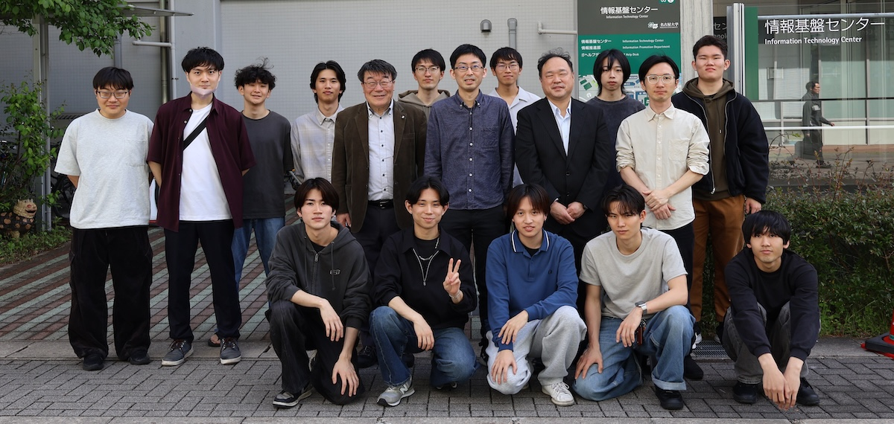

教員
星野 哲也
HOSHINO, Tetsuya
准教授
河合 直聡
KAWAI, Masatoshi
招へい教員
学生
秋葉 康佑
AKIBA, Kosuke
M2
林 俊一郎
HAYASHI, Shun-ichiro
M2
森田 光貴
MORITA, Koki
M2
棗 恒輝
NATSUME, Koki
M2
磯部 晃輝
ISOBE, Koki
M1
樹神 宇徳
KOTAMA, Takanori
M1
阪口 修吾
SAKAGUCHI, Shugo
M1
内田 啓太
UCHIDA, Keita
B4
青木 尊
AOKI, Mikoto
B4
沖 厚佑
OKI, Kosuke
B4
中谷 祐亮
NAKATANI, Yusuke
B4
久田 凌生
HISADA, Ryosei
B4
平川 大地
HIRAKAWA, Daichi
B4
卒業生
卒業後の進路（一部）
企業
- 株式会社オービック
- 株式会社イーゼ
- 株式会社Cygames
- 日本アイ・ビー・エム システムズ・エンジニアリング株式会社
- 日本電気株式会社
- 株式会社エイエイエスティ
- 三菱電機メカトロニクスソフトウェア株式会社
- NTT研究所
- NTTコミュニケーションズ株式会社
- EIZO株式会社
- TISシステムサービス株式会社
- デンソーテクノ株式会社
- NTTコムウェア株式会社
- 西日本電信電話
- 伊藤忠テクノソリューションズ株式会社
- 株式会社日立製作所
- 株式会社エィ・ダブリュ・エンジニアリング
- 上海米哈游網絡科技股份有限公司（株式会社miHoYo）
- 三菱電機株式会社
- ブラザー工業株式会社
- 富士通株式会社
- 株式会社野村総合研究所
- 野村證券株式会社
- キオクシア株式会社
- 有限会社 来栖川電算
- 兼房株式会社
- SBS情報システム
大学院・大学
- 大阪大学
- 東京大学
- 名古屋大学大学院情報学研究科 博士課程前期課程
- 名古屋大学大学院情報学研究科 博士課程後期課程
- 東京大学大学院工学系研究科・電気系工学専攻
2025年度 7 名
- D3 任 軒正博
- M2 樫村 寛大
- M2 水木 直也
- M2 百武 尚輝
- M2 中谷 崇真
- B4 三笠 諒
- B4 末永 和也
2024年度 5 名
- D3 森下 誠
- M2 羽生 達郎
- M2 湯淺 義尚
- M2 水島 慎吾
- M2 植野 貴大
2023年度 2 名
- M2 福原 諒河
- M2 満田 晴紀
2022年度 7 名
- M2 青木 将太
- M2 枦木 慎也
- M2 定方 翼
- M2 桑村 佳佑
- B4 青山 柊惟
- B4 梛尾 駿太
- 研究生 曹 亦東
2021年度 3 名
- M2 杉浦 拓未
- M2 山梨 祥平
- B4 鵜野 圭介
2020年度 4 名
- M2 刘 博文
- M2 北井 成哉
- M2 北澤 修太
- M2 山本 遼人
2019年度 5 名
- D3 桝井 晃基
- M2 石黒 史也
- M2 櫻井 刀麻
- M2 中島 大地
- M2 長谷川 颯
2018年度 3 名
- M2 関谷 和明
- M2 藤川 隼人
- M2 山田 賢也
2017年度 3 名
- M2 池田 朋哉
- M2 市村 駿太郎
- M2 岩間 拓也
2016年度 2 名
- M2 野村 拓矢
- B4 木村 海斗
元スタッフ
-
JST ACT-I専任研究者
劉 麗君
LIU, Lijun
2018年7月1日付 大阪大学大学院工学研究科機械工学専攻へ
-
准教授
荻野 正雄
OGINO, Masao
2019年4月1日付 大同大学情報学部情報システム学科へ
-
日本学術振興会特別研究員-PD
桝井 晃基
MASUI, Koki
2020年10月1日付 大阪大学大学院情報科学研究科 助教へ
-
名古屋大学価値創造研究センター外国人客員教員・特任教授
Osni Marques
Osni Marques
米国ローレンスバークレー国立研究所 計算研究部門（在籍期間: R3.12.02-R4.1.31）
-
准教授
大島 聡史
OHSHIMA, Satoshi
2022年10月1日付 九州大学情報基盤研究開発センターへ
-
特任助教
河合 直聡
KAWAI, Masatoshi
2025年3月1日付 東北大学サイバーサイエンスセンターへ
-
D3（博士課程3年）
任 軒正博
REN, Xuanzhengbo
2026年4月1日付 東京大学情報基盤センターへ